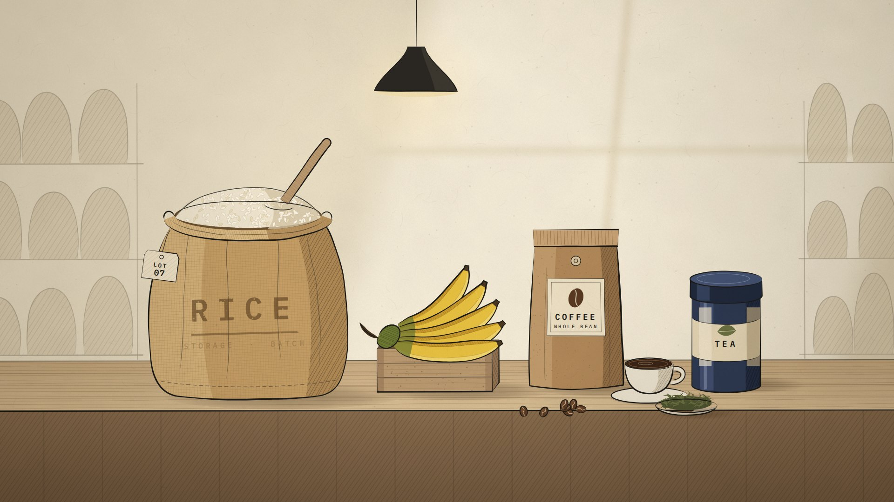
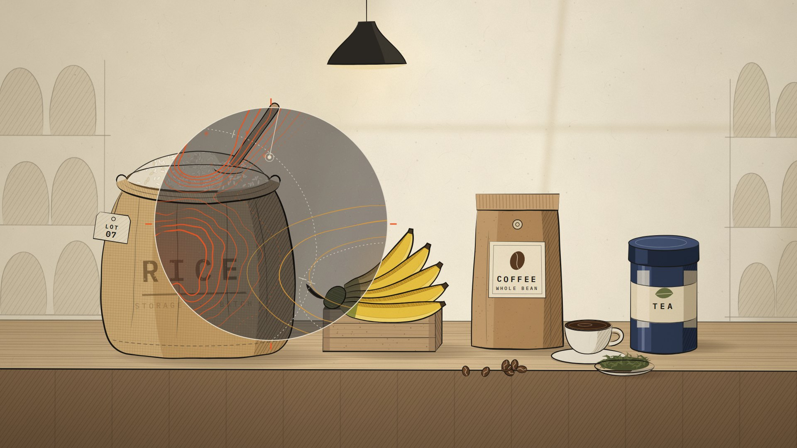
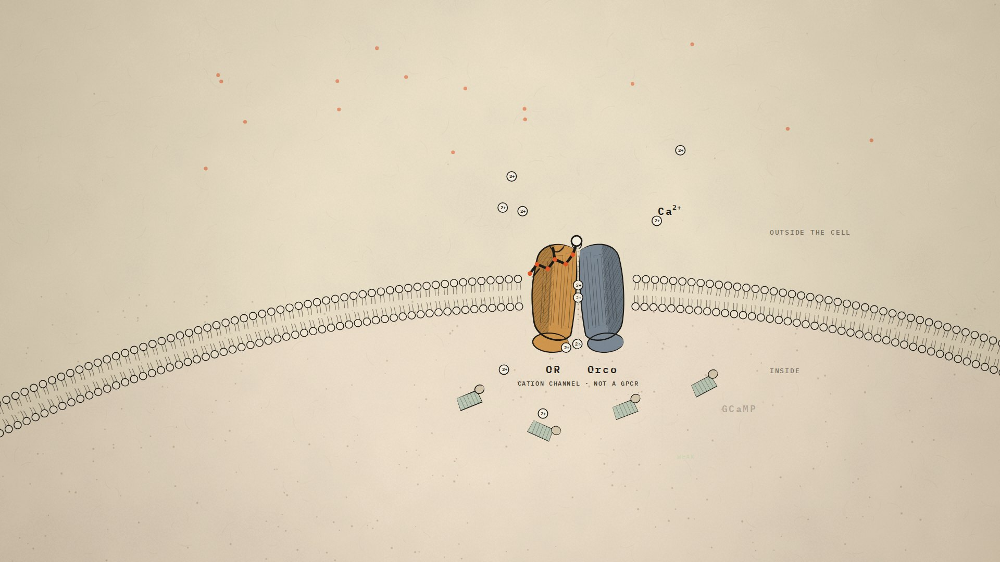
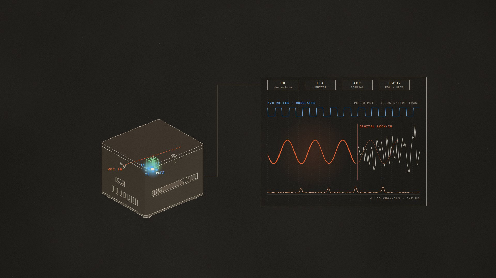
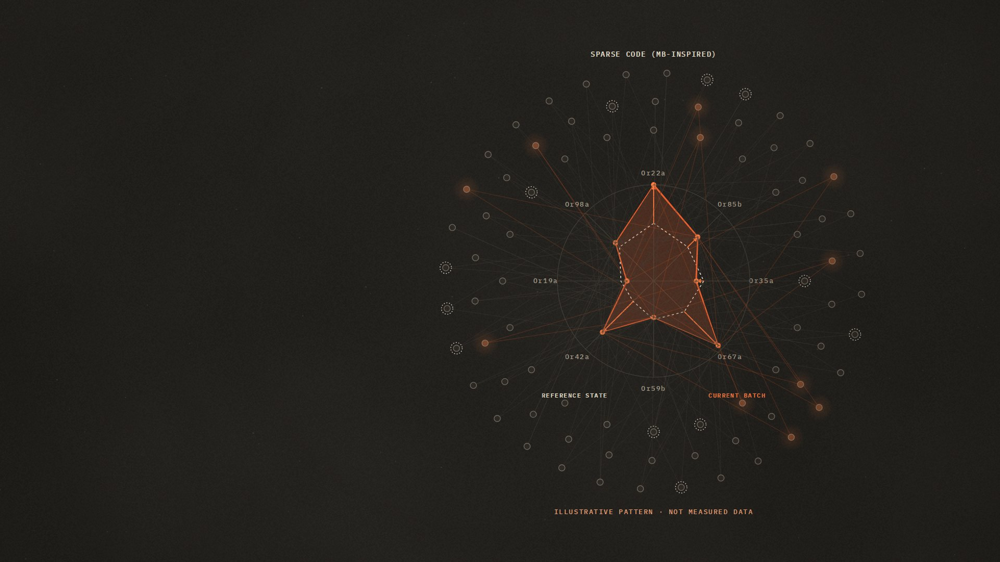
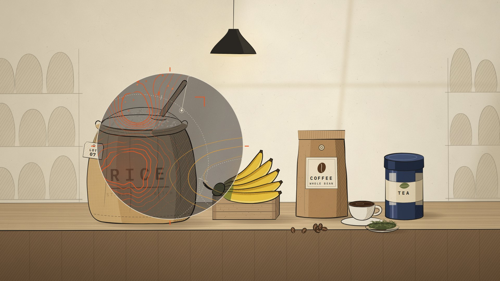
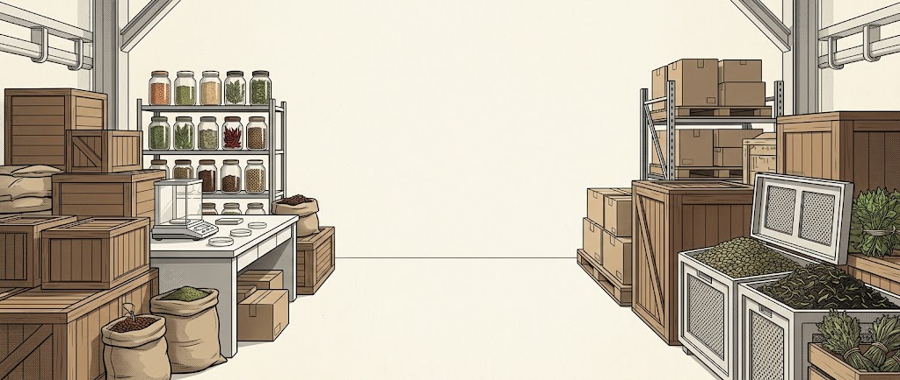
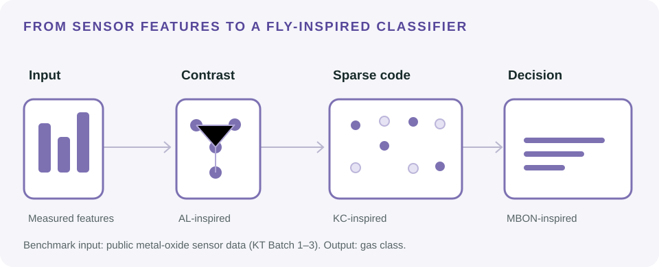
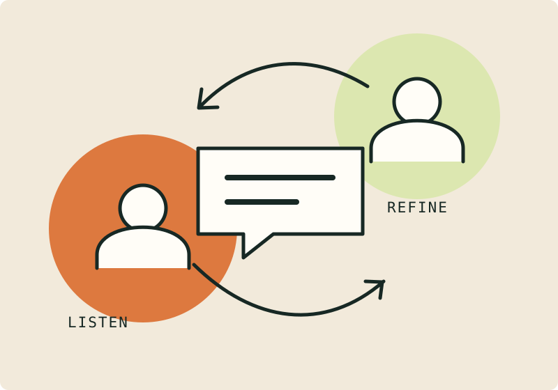

Fluorescence recording
Fluorescence recordingAeroSense: sense what sight misses.
Skip the cinematic introClick to make your cursor a sensing lens.
01 / 08
Skip intro ↓
THE STORY · AT YOUR OWN PACE
-

01 · The world looks normal
Everything looks fine.
Grain in storage. Fruit on the shelf. Coffee waiting to be brewed.
-

02 · Invisible change · through the lens
Nothing looks wrong. But chemistry doesn’t wait for us to notice.
Food can begin changing before the warning becomes visible. The contours are an illustration of a volatile (VOC) pattern shift, not a measured plume.
-

03–04 · Follow the signal
We can’t see it — but a receptor can sense it.
We borrowed part of a fruit fly’s sense of smell: OR + Orco sense an odor cue, Ca²⁺ rises, GCaMP glows — faintly.
-

05 · Read
A glow is not yet a measurement.
So we built a reader for signals almost hidden in noise: modulated ~470 nm excitation, a photodiode, and digital lock-in processing. The trace is illustrative.
-

06 · Decode
One odor. Many receptors. The pattern tells the story.
Illustrative pattern — not measured data.
-

07 · Back to the real world
Still looks fine. Inspect sooner.
Visual inspection finds nothing obvious; the odor pattern has begun to shift. AeroSense is a screening layer: it suggests follow-up, it does not confirm mold or toxins.
-
Sense what sight misses.
Sense biological change. Read weak fluorescence. Decode odor patterns. Act before losses escalate.
From an invisible change to an informed decision.
How AeroSense works ↓A living sense
Sense what
you can’t see.
A living-cell approach to food-quality screening—with fly receptors, fluorescence, and odor decoding.
Start with the science
AIR → SIGNALFollow the scent.
01 / The system
From sensing
to decisions.
Scroll to turn ↓
Fluorescence recordingReader CAD

Decoder architecture
Stakeholder dialogue · illustrationHuman practices
Design with
people.
Stakeholder perspectives shape the decisions.
Follow the decisions ↗02 / The experience
Try a new sense.
A SCENT BECOMES A PATTERN
Banana selected. Switch the odor to change the pattern.
Illustrative code · not measured sensor data.
Choose a topic.
The project film
Our story, on film.
With thanks
Supporters & collaborators
A shared effort, made possible by the organizations behind AeroSense.
Meet the people behind the support
National Tsing Hua University 
GenScript 
Integrated DNA Technologies 
Twist Bioscience 
Anthropic 
Ministry of Education, Taiwan 
Colorweb